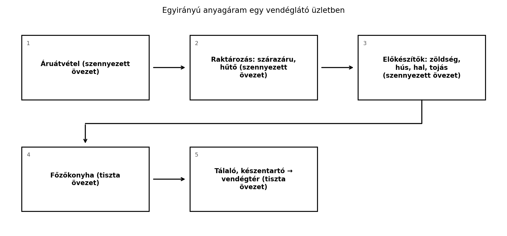

Egy vendéglátó üzlet akkor működik biztonságosan, ha a nyers hús nem találkozik a már kész salátával, és a hulladék nem a tiszta edények útján távozik. Ha a konyha helyiségeit rosszul kapcsolják össze, akkor a dolgozók akaratlanul is keresztszennyeződést okoznak. Jó helyiséghigiéniai kialakítással viszont a higiénia nem csak a takarításon és fegyelmen múlik, hanem az üzlet szerkezete is segít.
Képzeld el, hogy egy étterem konyhájában az áru beérkezik a hátsó bejáraton, a zöldséget és a húst ugyanabban a helyiségben tisztítják, majd a kész salátát is ott adagolják, ahol a nyers csirke leve kifröccsent. A vendég panaszt tesz gyomorrontásra. Ennek oka gyakran nem egyetlen hiba, hanem a helyiségek rossz kapcsolata. Ebben az alfejezetben megtanulod, hogyan rendezzük el a helyiségeket úgy, hogy a nyers és a kész élelmiszer útja ne keresztezze egymást.
Egy jól kialakított üzletben az élelmiszer útja mindig a szennyezett terület felől a tiszta terület felé halad. Az áru a hátsó, szennyezett oldalon érkezik, és a vendégtér felé haladva egyre tisztább zónákba kerül. A hulladék, a göngyöleg és a szennyezett eszközök visszafelé, vagy külön, erre kijelölt úton mozognak.
Az alábbi ábra egy egyszerű anyagutat mutat:

Definíció. Egyirányú anyagáram: az élelmiszer, az edény, az eszköz és a személy mozgásának olyan rendje, amelyben a szennyezett anyag és a tiszta, hőkezelt vagy fogyasztásra kész élelmiszer útja nem keresztezi egymást. A haladás iránya a szennyezett zónától a tiszta zóna felé mutat.
Definíció. Szennyezett övezet: minden olyan helyiség vagy munkaterület, ahol nyers élelmiszer, tisztítatlan zöldség, göngyöleg, hulladék vagy szennyezett edény fordul elő. Ilyen például az áruátvétel, a szárazáru raktár, a zöldség- és húselőkészítő, valamint a mosogatók szennyes oldala (a szennyes edények fogadása és előtakarítása).
Definíció. Tiszta övezet: minden olyan helyiség vagy munkaterület, ahol hőkezelt, fogyasztásra kész étel, tiszta edény, tálalóeszköz dolgozható fel, adagolható vagy tárolható. Ilyen például a főzőkonyha, a tálaló, a készentartó és a mosogatók tiszta oldala (szárítás, tiszta edény tárolása). A tiszta övezet soha nem találkozhat közvetlenül a szennyezettel.
A két övezet határán kézmosó, eszközváltás vagy külön munkaeszköz szükséges. A helyiségek közötti ajtók, átadóablakok feliratozása segíti a dolgozók tájékozódását.
A fenti folyamatábra csak az élelmiszer útját mutatja; azt, hogy a négy útvonal hol fut, és hogy nem keresztezik egymást, csak alaprajzon lehet látni. Az alábbi mintaalaprajzon a szennyezett övezet sraffozott, a tiszta üres. A nyersáru (folytonos vonal) a hátsó bejárattól a raktárakon és az előkészítőkön át jut a főzőkonyhába, a kész étel (szaggatott) a tálalón át a vendégtérbe. A szennyes edény (pont-vonal) külön úton jut vissza: a konyhai edény a fekete, az étkezési edény a vendégtérből a fehér mosogatóba; mindkettő a mosogató szennyes oldalán érkezik, és a tiszta oldalán távozik. A hulladék (pontozott) az előkészítőkből közvetlenül, a mosogatóból a hátsó folyosón jut a hulladéktárolóba.
Ellenőrzési pont: rajzolj az alaprajzra egy tetszőleges útvonalat, és nézd meg, keresztez-e egy másikat – ahol igen, ott elkülönítés (fal, átadóablak, időbeli szétválasztás) kell. A jobb alsó részlet a fejezet Valós esetének hibáját mutatja: a hulladék a főzőkonyhán át, a tálalóasztal mellett halad, és keresztezi a kész étel útját. Az alaprajz szemléltető; a valós üzem kialakítását a hatályos előírások és a HACCP-terv határozzák meg (ellenőrizendő). A HTML-kiadásban az útvonalak egyenként ki-be kapcsolhatók, a „Hibás változat” pedig ráhelyezi a hibás hulladékutat a teljes alaprajzra.
A vendéglátó üzlet telepítésénél a higiéniai biztonság az első. A helyszín környezete nem szennyezheti az élelmiszert.
Szabály. A vendéglátó egységet úgy kell telepíteni, hogy a környezet ne legyen szennyező forrás. A telephely ne legyen például szeméttelep, állattartó telep, erős por-, füst- vagy bűzkibocsátású üzem közelében (ellenőrizendő: települési előírások és a 852/2004/EK rendelettel összhangban lévő hazai szabályozás).
Szabály. Az üzletben biztosítani kell: - ivóvizet hideg és meleg hőmérsékleten, a konyhatechnológiai igény szerint (ellenőrizendő: vonatkozó ivóvíz-szabvány); - szennyvízelvezetést, amely a konyhai zsíros vizet zsírfogón keresztül vezeti el (ellenőrizendő: helyi közműszabályzat); - megfelelő szellőzést és elszívást, különösen a sütő- és mosogatóterekben; - megfelelő világítást, különösen az élelmiszer-ellenőrzési pontokon; - rovar- és rágcsálóvédelem lehetőségét (szúnyogháló, légzsilip, rovarirtó lámpa csak élelmiszerre nem hulló kivitelben).
Jogszabály. A 852/2004/EK rendelet II. melléklete általános követelményeket fogalmaz meg az élelmiszer-vállalkozó létesítményeire: az elrendezésnek, a tervezésnek, a kialakításnak és a méretezésnek lehetővé kell tennie a megfelelő higiéniai gyakorlatot, a szennyeződés elkerülését és a tisztíthatóságot. A pontos hazai előírásokat a hatályos rendeletek és NÉBIH-útmutatók tartalmazzák (ellenőrizendő: aktuális szöveg és hatály).
A személyzeti és áru bejárat lehetőleg a hátsó, szennyezett oldalról nyíljon. A vendégbejárat elkülönül. Ha az üzlet mérete engedi, a nyersáru és a készétel kiadásához külön átadóablak vagy légzsilip szolgál. A bejáratoknál láb- és kerékfertőtlenítő csak ott indokolt, ahol a szennyeződés behordásának kockázata magas (pl. nagykonyha).
Eljárás. Az üzlet higiéniai bejárásakor ellenőrizd: 1. Bejön-e a nyersáru a szennyezett oldalon. 2. El van-e különítve a vendég- és a személyzeti bejárat. 3. Van-e átadóablak a készétel kiadásához. 4. Van-e védett hely a göngyöleg és a hulladék átmeneti tárolására. 5. Van-e kézmosó minden bejáratnál, ahol élelmiszert vesznek át vagy adnak ki.
A raktárak hűvösek, szárazak, szellőztethetők és zárhatók legyenek. A padlóburkolat csúszásmentes, a falak és polcok moshatók. A polcokon az élelmiszerek ne érintkezzenek a padlóval: alsó polc legalább 15–20 cm magasan legyen (ellenőrizendő: NÉBIH-útmutató).
Higiénia. A hűtőraktárban a nyers húst és a kész ételt mindig elkülönítve, lefedve tárold: nyers hús alulra, fogyasztásra kész étel felülre. A polcok felcímkézése, a FIFO-elv (first in, first out) alkalmazása megelőzi, hogy lejárt áru kerüljön felhasználásra; a lefedés és az elkülönített tárolás pedig a keresztszennyeződést.
Az előkészítő helyiségekben a nyersanyagok mosása, hámozása, darabolása folyik. Itt a padlón és a munkaasztalon nyers élelmiszermaradékok keletkeznek, ezért ezek a szennyezett övezethez tartoznak.
Tilos. A hús- és zöldség-előkészítőben ugyanazt a vágódeszkát, kést vagy munkaasztalt használni az előkészítés során anélkül, hogy közben fertőtlenítenéd. Külön színkódolt eszközök javasoltak (pl. piros = hús, zöld = zöldség).
A főzőkonyha már a tiszta övezet része, mert itt hőkezelés történik, és a hőkezelt ételt itt tartják melegen vagy adagolják. A berendezés úgy van elhelyezve, hogy a nyersanyag ne kerüljön vissza a főzőtérből az előkészítőbe.
Szabály. A főzőkonyhában a padozat, a falburkolat és a munkalapok sima, folytonos, hézagmentes, mosható és fertőtleníthető felületűek legyenek. A sütő-, főző- és páraelszívó berendezések mögött könnyen tisztítható tér maradjon.
Kritikus pont. A készentartás során a hőkezelt meleg ételt legalább 63 °C-on, legfeljebb 2 órán át, a hideg ételt legfeljebb 5 °C-on (szigorúbb üzemi szabály szerint 4 °C-on) kell tartani (ellenőrizendő: NÉBIH-útmutató és a HACCP-terv; a könyv egységes tanulási értéke). A készentartó eszközök a tiszta övezetben helyezkedjenek el, közvetlenül a tálalóvonal mellett.
A vendéglátásban kettős mosogatórendszert használunk.
Mindkét mosogatónak van szennyes oldala (fogadás, előtakarítás, mosás) és tiszta oldala (öblítés, szárítás, tárolás); a szennyes edény útja elkülönül a tiszta edény útjától. A szennyes oldal a szennyezett övezethez, a tiszta oldal a tiszta övezethez tartozik (ellenőrizendő: NÉBIH-útmutató).
Higiénia. A mosogatók szennyes és tiszta oldala között ne legyen átjárás, vagy ha van, akkor elkülönített átadóablak és kézmosó. A szennyezett edény ne kerüljön a tiszta edényes polcra. A fekete és a fehér mosogatás eszközei (szivacs, kendő) se keveredjenek.
A vendégtér a vendégek által használt tiszta terület. Ide a konyhából csak kész étel kerülhet, tálalóeszközön és tiszta edényben. A vendégtér és a konyha között légzsilip vagy legalább ajtó válassza el, amely nem marad nyitva folyamatosan, hogy a konyhai gőzök és szagok ne áramoljanak a vendégekhez.
Szabály. A vendégtérben is legyen kézmosó a felszolgáló személyzet számára, különösen akkor, ha a felszolgálás kézzel történik. Az asztalok és székek könnyen tisztíthatók legyenek, és a padlóburkolat csúszásmentes (ellenőrizendő: munkavédelmi előírás).
A dolgozók öltözője, zuhanyzója, WC-je és étkezője nem keresztezheti az élelmiszer útját. A szociális helyiségekből az élelmiszeres helyiségbe történő belépés előtt kézmosás kötelező.
Szabály. A WC és az öltöző ajtaja ne nyíljon közvetlenül a konyhába vagy az előkészítőbe; közöttük előtér vagy folyosó legyen. A WC-ben legyen kézmosó, szappan, egyszer használatos törlő és fertőtlenítő (ellenőrizendő: kapcsolódó higiéniai előírások).
Ez az eljárás segít a tanulónak a tankonyhán vagy a munkahelyén ellenőrizni a helyiségek higiéniai kialakítását.
Lépések: 1. Rajzold le az üzlet alaprajzát, jelöld be a bejáratokat és a helyiségeket. 2. Jelöld be a nyersáru útját a bejárattól a raktáron át az előkészítőbe. 3. Jelöld be a készétel útját a főzőkonyhából a tálalóba és a vendégtérbe. 4. Keresd meg, hol keresztezi egymást a nyers és a kész étel útja, vagy hol kerülhet szennyezett edény a tiszta zónába. 5. Ellenőrizd a mosogatók elkülönítését: van-e fekete és fehér mosogató. 6. Mérj hőmérsékletet a hűtőraktárban, a fagyasztóban és a készentartóban (ellenőrizendő: HACCP határértékek). 7. Jegyezd fel a hiányosságokat: hiányzó kézmosó, nyitott ajtó, közös vágódeszka. 8. Készíts rövid jelentést a javasolt javításokkal.
Ellenőrzési pont: a helyiségek kapcsolata feleljen meg annak, hogy a szennyezett övezetből a tiszta övezetbe csak átadóponton keresztül, kézmosás után lehessen belépni.
A helyiségkialakítás minőségét higiéniai bejárással és mérésekkel ellenőrizzük.
Egy közétkeztetési konyhán a zöldség-előkészítőben összegyűlt zöldséghéjat a dolgozó a főzőkonyhán keresztül vitte a hulladéktárolóba. Útközben a hulladékos edény megérintette a tiszta tálalóasztalt. Másnap a készen tárolt főzelékből vett minta emelkedett összcsíraszámot mutatott (ellenőrizendő: laboratóriumi adat). A helyesbítő intézkedés az volt, hogy a hulladékot külön, a hátsó kijáraton keresztül vitték ki, a tálalóasztalt áthelyezték, és a zöldség-előkészítő ajtaját lezárták a tiszta övezet felé. A tanulság: a hulladékutat is meg kell tervezni, mert a szennyezett zóna akaratlanul is bekerülhet a tiszta zónába.
1. feladat (A)
Fogalmazd meg saját szavaiddal, mit jelent az egyirányú anyagáram a
konyhában.
2. feladat (A)
Sorold be a következő helyiségeket és térrészeket tiszta vagy
szennyezett övezetbe: zöldség-előkészítő, főzőkonyha, a mosogató
szennyes oldala, húselőkészítő, tálaló, a mosogató tiszta oldala.
3. feladat (B)
Egy konyha alaprajzán a nyers hús átvétele a főzőkonyhán keresztül
történik. Rajzold le a helyes anyagutat, és jelöld be a hibás
kereszteződést.
4. feladat (B)
Sorold fel a hűtőraktárban történő tárolás legfontosabb szabályait a
nyers hús és a kész étel elkülönítésére.
5. feladat (C)
Tegyük fel, hogy egy kis étterem konyhájában csak egyetlen előkészítő
helyiség van, de a tulajdonos nem akar külön hús- és
zöldség-előkészítőt. Írj három konkrét intézkedést, amellyel a
keresztszennyeződés kockázata csökkenthető anélkül, hogy falat
húznál.
6. feladat (D)
A tankonyhán végezd el a higiéniai bejárást a fenti gyakorlati útmutató
szerint. Készíts rövid jelentést, amelyben legalább két hiányosságot
azonosítasz, és javasolsz javítást.
1. feladat (A)
Az egyirányú anyagáram azt jelenti, hogy az élelmiszer, az edény és a
személy mozgása mindig a szennyezett területről a tiszta terület felé
tart, így a nyers és a kész élelmiszer útja nem keresztezi egymást.
2. feladat (A)
Tiszta: főzőkonyha, a mosogató tiszta oldala, tálaló. Szennyezett:
zöldség-előkészítő, húselőkészítő, a mosogató szennyes oldala.
3. feladat (B)
Helyes anyagút: áruátvétel → húselőkészítő (szennyezett) → főzőkonyha
(tiszta) → tálaló. Hibás kereszteződés: ha a nyers hús a főzőkonyhán
megy keresztül, az a tiszta zónát szennyezi. (A feladat megoldása rajzos
formában: áruátvétel a hátsó oldalra, előkészítőbe, majd átadóablakon a
főzőkonyhába.)
4. feladat (B)
- A nyers húst a hűtőben alulra, a kész ételt felülre tedd.
- Minden élelmiszert lefedve tárolj.
- A húsokat külön polcon, a zöldséget és a készételt külön helyen
tárold.
- Használj címkézést és FIFO-elvet.
- Rendszeresen ellenőrizd a hűtő hőmérsékletét (0–5 °C, ellenőrizendő:
HACCP-terv).
5. feladat (C)
Lehetséges intézkedések:
- Használj színkódolt vágódeszkát és kést (piros = hús, zöld =
zöldség).
- Jelölj ki külön munkafelületet a húsnak és a zöldségnek, fizikai
elválasztással (pl. külön asztalok).
- Vezess be időbeni elválasztást: először a saláta készül, utána a hús,
közben fertőtlenítés.
- Alkalmazz külön tárolóedényeket és hűtőrekeszeket.
- Kézi fertőtlenítő és egyszer használatos kesztyű a hús
előkészítésénél.
6. feladat (D)
A jelentés tartalmazza a bejárt helyiségeket, a mért hőmérsékleteket, az
azonosított hiányosságokat (pl. hiányzó kézmosó, közös vágódeszka,
nyitott átjáró) és a javasolt javításokat (pl. kézmosó felszerelése,
színkód, ajtózárás). A megoldás a tankonyha konkrét állapotától
függ.
A vendéglátó üzlet higiéniai kialakításának alapja az egyirányú anyagáram: az élelmiszer mindig a szennyezett övezetből (áruátvétel, raktár, előkészítők, a mosogatók szennyes oldala) a tiszta övezet felé (főzőkonyha, tálaló, a mosogatók tiszta oldala, vendégtér) halad. A két övezet között kézmosó, átadóablak vagy elkülönített zóna szükséges. A telepítésnél ivóvizet, szennyvízelvezetést, zsírfogót, szellőzést és rovarvédelmet kell biztosítani. A raktárakban a hűtő hőmérséklete 0–5 °C, a fagyasztóé −18 °C alatt tartandó (ellenőrizendő: HACCP-terv). A hús- és zöldség-előkészítőket el kell különíteni. A fekete mosogató a konyhai főző- és sütőedények, a fehér mosogató a vendégtérből visszaérkező étkezési edények mosogatója; mindkettőn külön van a szennyes és a tiszta oldal. A szociális helyiségek nem nyílhatnak közvetlenül a konyhába. Továbbvitt eredmény: az egyirányúság elvét és a helyiségkapcsolatokat a Takarítás, fertőtlenítés, mosogatás és hulladékkezelés alfejezetben a takarítási sorrendnél és a hulladékútnál, valamint a Konyhák típusai, helyiségei és üzemtana alfejezetben a konyhai üzemtan tervezésénél használjuk fel.